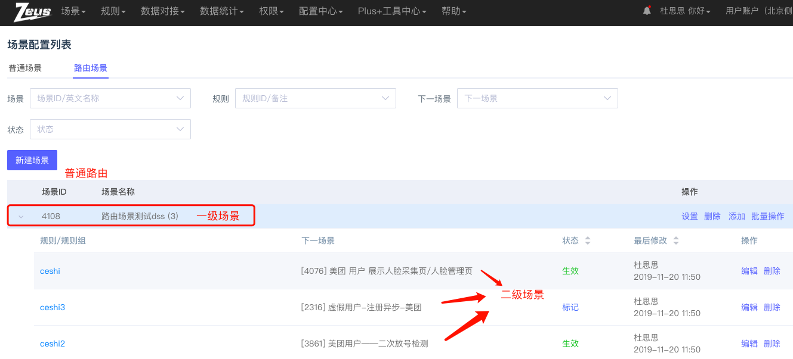
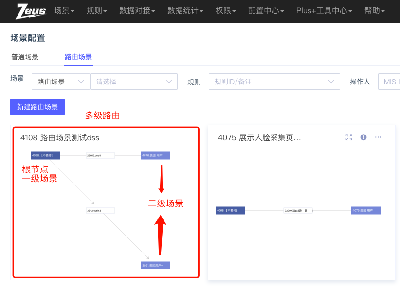
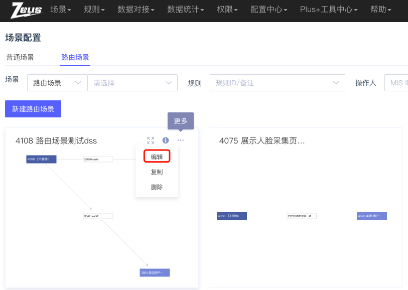
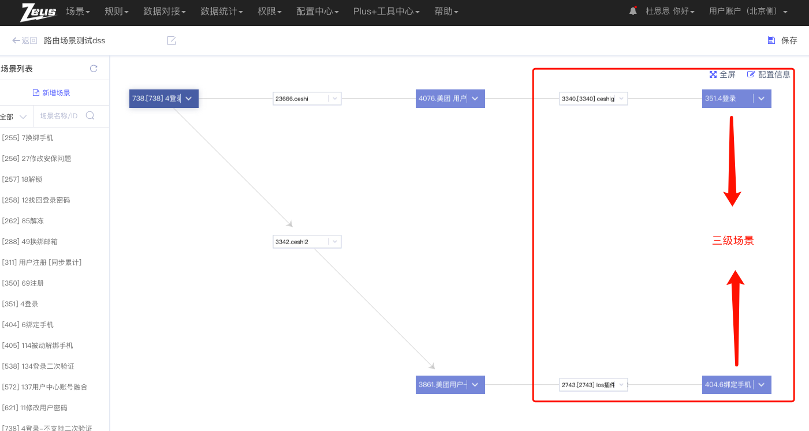
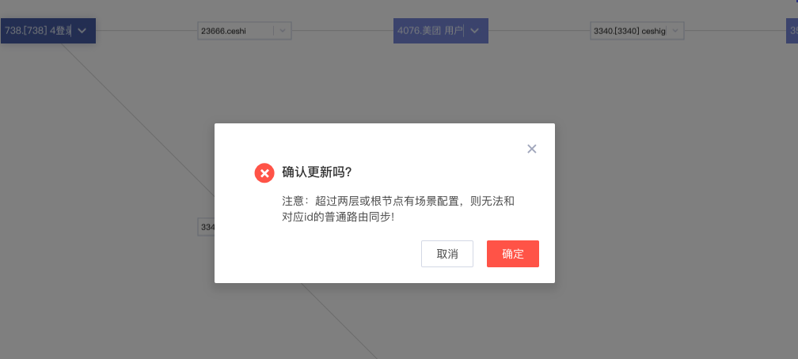
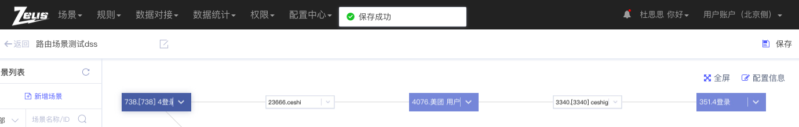
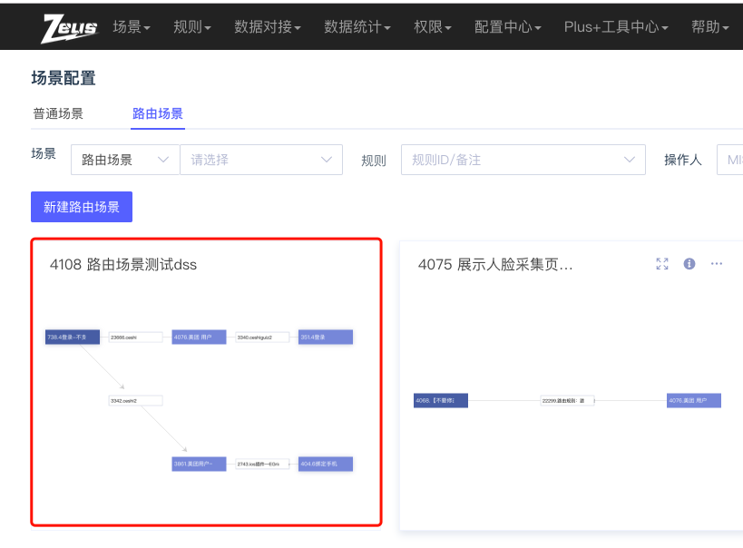
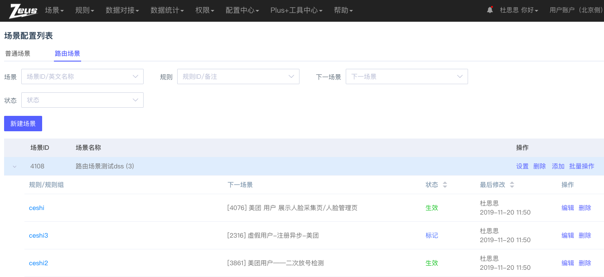

说明：普通路由修改为多级路由
一、背景
Zeus新增提供多级路由服务（决策流），原有普通路由仅支持两层路由，多级路由支持多层路由（考虑性能限制，目前最大支持5层）
对于已经使用普通路由的用户可以基于现有普通路由修改为多级路由，不需要重新创建；
二、操作说明
注意：
当满足普通路由和多级路由的兼容条件时，普通路由的任何修改都会后台同步到对应id的多级路由，多级路由的修改也会同步到对应id的普通路由。
当不满足兼容条件时，意味着业务已经开始使用多级路由，此时编辑普通路由或多级路由时会提示不兼容，业务自己选择是否要将修改数据同步。
这里的修改包括添加、修改、删除场景本身（如场景名）和场景配置，尤其删除时会同时删除对应id的场景，操作时请务必小心。
兼容条件为同时满足以下两个条件
- 多级路由的层级为2层
- 多级路由的根节点为空节点，即不能添加任何场景配置
Step1：入口
http://zeus.mis.rc.test.sankuai.com/data_zeus_static/#/routerSceneList
Step2：找到需要修改的普通路由场景
在普通路由场景中情况：

在多级路由场景中情况：
⚠️目前路由规则无标记状态，因此仅同步生效状态的流分支

Step3：在多级路由页面内修改路由场景配置
点击编辑--->进行修改，修改行为包含：可以替换根节点场景、增加路由层级，如下图例增加三级场景


Step4：弹框提示普通路由已经修改，确认修改
⚠️新增分支无法同步到普通路由上

、
Step5：查看修改后路由场景配置
第一张为多级路由，第二张为普通路由，新增分支无法同步


Step6：研发数据接口切换
⚠️⚠️⚠️即使配置完成切换后，也不会影响线上的使用，如果业务之前调用的是如下接口，依然走的是原有普通路由的逻辑（EitherTypeScene表示普通场景 或 普通路由场景）
public GetDecisionByEitherTypeSceneResult getDecisionByEitherTypeScene(Integer sceneId, Map<String, ZeusObject> context)需要切换成新的多级路由的接口才能把流量打到多级路由上
public GetDecisionByRouterResult getDecisionByMultiLevelRouterScene(
Integer routerSceneId,
Map<String, ZeusObject> context,
Integer accumulateEventId) throws ZeusClientException, TException {切换接口后是否需要修改zeus返回结果的解析逻辑？
一般情况下，业务的处理逻辑是遍历xxResult中的public List<GetDecisionResult> sceneResultList字段，找出所有场景结果中命中的场景配置，然后取优先级最高的决策作为最终决策，这种解析逻辑理论上不需要做大的修改，只需要类型匹配即可。其他的解析逻辑请根据业务自身情况修改。
由于业务逻辑各不相同，无论哪种情况都希望业务能在线下测完后线上回归验证或双跑，避免接口切换后发生事故！！！
三、FAQ
Q1：在场景列表/场景配置列表中出现“【不要修改】自动同步的多级路由的公用根节点”是什么意思？
A：出现该信息是您所在的业务方下有使用路由场景才会出现，若未使用路由场景但出现此信息请联系值班Zeus。
该信息为系统自动生成信息，支持业务方将已经使用的普通路由修改为多级路由。无任何实际意义，仅仅为多级路由的根节点
普通路由和多级路由区别：普通路由仅支持两层；多级路由支持多层，最大不能超过5层；说明：普通路由场景使用文档、说明：Zeus多级路由使用指南

Q2：可以不切换业务接口完成由普通路由转为多级路由么？
A：目前不支持